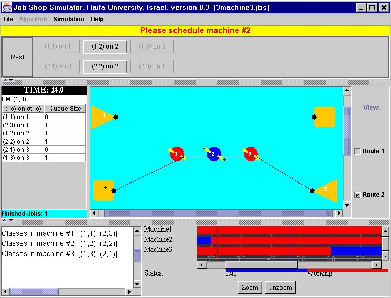

Job Shop Simulation Project
Version 1.2. Updated July 2001
This is a software simulation of a job shop. It is designed for the following uses:
- Help students and researchers understand the dynamics of a working job shop by
allowing interactive user-controlled scheduling.
- Help design and test new heuristics/algorithms for scheduling job shops.
- Allow for easy distribution (marketing) of heuristics/algorithms by means
of Java applets.
- Integrate into a simulation that will repeatidly call the "simulation kernel"
of this software package and gather statistics regarding the performance and usefullness
of several scheduling heuristics.
The software may be used in three different ways:
- Stand alone application.
- Java2 applet.
- Simulation kernel classes.
The GUI for the stand-alone application and the applet looks like this:

Download (zipped).
To try it out you should:
- Download (Use the link above).
- Unzip the contents of the downloaded file into any directory.
- Makesure you have the Java Runtime Environment 1.3 installed: Go to javasoft's site
- On a Windows machine, double click the shopsim.jar icon in the directory containing the contents of the zip file. On a Linux or Solaris machine, type:
java -jar shopsim.jar
The JobShopSimulation should startup. You can then try out some example files that are supplied in the zip by openning them, selecting an algorithm, and running the simulation.
To Get the latest source code, write me an e - mail. (ynazarty@study.haifa.ac.il)